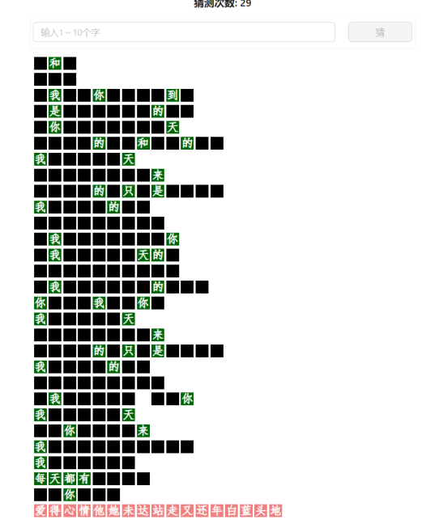
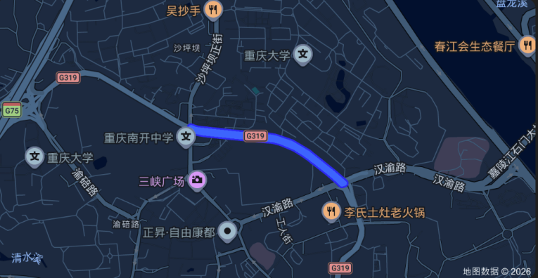
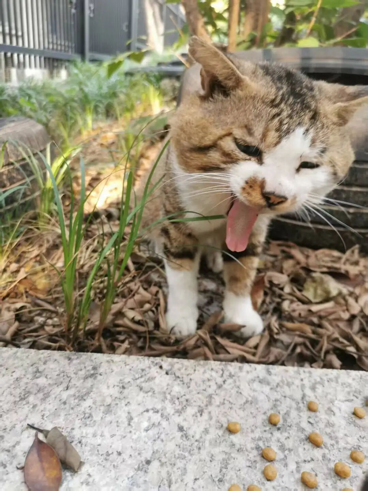

安河桥以北，津南村以南
昨天玩猜盐（一种解迷游戏）的时候，猜歌词的每日一题非常有趣，我猜了将近30次都没有猜出歌名（我的一般水平在15次以内），题目如下：

给你三秒钟，你能猜出是哪首歌吗？（如果你上网，那么你没听过这首歌的概率无限接近于0） 好，三…
二…
一…
零。揭晓答案：就是传说中狗听了都流泪的安河桥。
我看到答案的第一反应是，很无奈。我上小学那会儿，麻油叶正当红，正是民谣的鼎盛时期，我也自然而然听起了民谣，尤其对朴树、宋冬野、赵雷等人的歌着迷。宋冬野的歌，包括他不太出名的第一张专辑《雪泥鸿爪》，我每一首都听过十遍以上。而且我还偶然发现，按顺序播放时，我完全可以在下一首歌前奏播放前准确的说出下一首歌的歌名，无论是哪一首。而如今，正处于人生脑力巅峰时期的我，竟然想不起那首最有名的《安河桥》？？
算了，我安慰自己，可能是太熟悉，反而想不起。
痛定过后，我决心要找回从前的一些记忆。从小学一路走到这个离家一千多公里以外的大学，我已经丢失了太多。于是乎，在某个没那么忙碌的午后，我在图书馆靠窗的位置，戴上耳机，又开始循环那张专辑——《安河桥北》。
丝毫不陌生的旋律响起。让我惊讶的是，虽然离我上次自己坐下来听宋胖的歌已经过去了接近7年，我仍能记起每一句歌词。一股欢快的情绪在空气中飘荡；几首歌过后，某一首歌的旋律突然响起，我一下有想落泪的冲动。那音乐径自流动着，在图书馆里，我还是没忍住，一时泪流。
那首歌是《六层楼》。
我很清楚的记得，《六层楼》绝对不是我小学时最喜欢的一首，甚至也不是最悲伤的一首，而是带着些许欢快与无奈的。而《六层楼》歌词的第一句，就是一句谎言：
“在沙中路的悬崖边，我拍了拍你的头；风吃掉月亮，一口一口。”
沙中路根本就没有悬崖。

而我是在离开沙坪坝，离开我的高中岁月很久以后，才知道究竟哪条路是沙中路。而在知道它名字之前，我走过，徘徊过那条路，恐怕已经上百次。更琐碎的片段是，在高中难得的归家公车上，凝视着初中同学穿着对门另一个学校校服的背影，有点滑稽，有点陌生。青春和重庆的潮湿有着不可言说的默契，使人难以开口。更令人奇怪的是，这些碎片在当时只像天空的乌云。而当离开近两年后，身处异乡之后，这些记忆反而连成一片浓重的乡愁，在四月的深圳下起暴雨。
而我却并不知晓它的名字，尽管我在离它两百米的地方住了三年，完成了我那不是那么快乐的高中岁月，告别了我那没那么肆意洒脱，却仍然让我在以后一遍一遍怅惘、失落、怀念的青春。
我是重庆人，却不是沙坪坝人，但我在沙坪坝丢失了人生中最宝贵的三年。上了大学之后，在离重庆很远很远的地方，我略带惊惶地发现，我不是唯一一个在沙坪坝弄丢青春的人，而在沙坪坝度过的岁月，似乎成为某种挥之不去的失落，某种相视一笑的伤感，留在每个独自前往未知异乡的游子眼神里。
而标题的后半段，津南村，则是我高中校园里的一片古建筑。我在津南村旁的柏树村住了三年，津南村的每一个角落，我几乎都驻足凝视过。我知道哪里会有猫的出没；我认识谨慎的三花，和她只有右边耳朵颜色不同的女儿；我知道黑皮最后被埋在哪里，那是个世界上只有两个人知道的秘密；小时候顽皮，长大了学会打人的赖皮；最后被抱走的小灰灰，和那个钻进草丛低头看她的他；还有绿眼睛的大脸，最后不知消失在哪里。我怀念的高中生活，留下的只是这些无言的瞬间。

那三年，我至今不知是如何浑浑噩噩地过。三年难忍漫长，离开后看只如一列南下的列车，六个半小时的行程，坐时每一分钟都煎熬，下车觉得空气新鲜湿润，长久后开始想念那列车，最后发现那列车不再开了，就那样横在今天与昨日，他乡与故乡之间，给记忆蒙上残忍的雾气，就那样丢下我。
就像我不知道沙中路在哪，手握青春时也未曾感受到青春的流逝。只有一把沙落尽时，手掌才会感觉空落落——但已为时已晚。我就这样不自知。
宋冬野唱的是“今天走，明天走，喝不完山城的酒”。我不喝酒，也不想走。